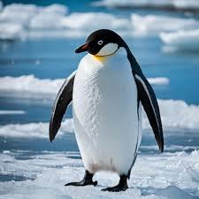
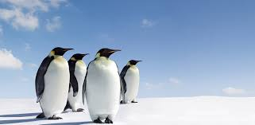

Pinguim
Os pinguins são aves marinhas conhecidas por sua postura ereta e sua habilidade excepcional de nadar. Embora estejam associados às regiões geladas da Antártica, algumas espécies também habitam áreas mais temperadas, como as costas da América do Sul e da Nova Zelândia. Existem diversas espécies de pinguins, sendo o pinguim-imperador o maior e mais conhecido.
Esses animais se alimentam principalmente de peixes, lulas e crustáceos, capturando suas presas durante mergulhos ágeis e rápidos no oceano. Adaptados ao frio, os pinguins possuem uma espessa camada de gordura e penas densas que os mantêm aquecidos nas temperaturas extremas.
